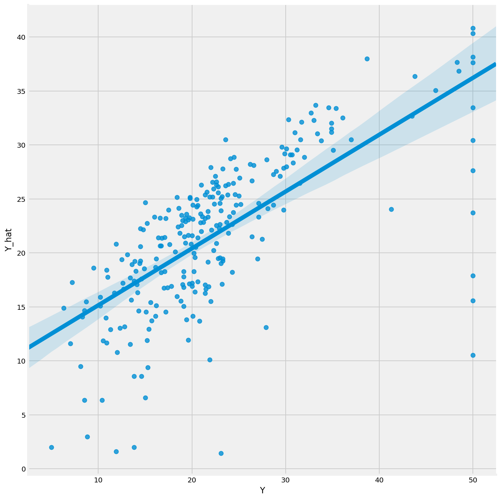

Third Blog

Train-Test Split and Cross-Validation Lab
Review of Train/Test Validation Methods
We've discussed overfitting, underfitting, and how to validate the "generalizeability" of your models by testing them on unseen data.
In this lab you'll practice two related validation methods: 1. train/test split 2. k-fold cross-validation
Train/test split and k-fold cross-validation both serve two useful purposes: - We prevent overfitting by not using all the data, and - We retain some remaining data to evaluate our model.
In the case of cross-validation, the model fitting and evaluation is performed multiple times on different train/test splits of the data.
Ultimately we can use the train/test validation framework to compare multiple models on the same dataset. This could be comparisons of two linear models, or of completely different models on the same data.
Instructions
For your lab, fit three different models on the Boston Housing Data. For example, you could pick three different subsets of variables, one or more polynomial models, or any other model that you like.
Start with train/test split validation: * Fix a testing/training split of the data. * Train each of your models on the training data. * Evaluate each of the models on the testing data. * Rank the models by how well they score on the testing data set.
Then try k-fold cross-validation: * Perform a k-fold cross-validation and use the cross-validation scores to compare your models. Did this change your rankings? * Try a few different k-splits of the data for the same models.
If you're interested, try a variety of response variables. We start with MEDV (the .target attribute from the data set load method).
from matplotlib import pyplot as plt
import numpy as np
import pandas as pd
from scipy import stats
import seaborn as sns
from sklearn.linear_model import LinearRegression
from sklearn.model_selection import train_test_split, KFold, cross_val_score
from sklearn.metrics import r2_score
%config InlineBackend.figure_format = 'retina'
%matplotlib inline
plt.style.use('fivethirtyeight')
import pandas as pd
import numpy as np
from sklearn.datasets import load_boston
boston = load_boston()
X = pd.DataFrame(boston.data, columns=boston.feature_names)
y = boston.target
1) Clean up any data problems.
Fix any problems with the data, if applicable.
X.head()
| CRIM | ZN | INDUS | CHAS | NOX | RM | AGE | DIS | RAD | TAX | PTRATIO | B | LSTAT | |
|---|---|---|---|---|---|---|---|---|---|---|---|---|---|
| 0 | 0.00632 | 18.0 | 2.31 | 0.0 | 0.538 | 6.575 | 65.2 | 4.0900 | 1.0 | 296.0 | 15.3 | 396.90 | 4.98 |
| 1 | 0.02731 | 0.0 | 7.07 | 0.0 | 0.469 | 6.421 | 78.9 | 4.9671 | 2.0 | 242.0 | 17.8 | 396.90 | 9.14 |
| 2 | 0.02729 | 0.0 | 7.07 | 0.0 | 0.469 | 7.185 | 61.1 | 4.9671 | 2.0 | 242.0 | 17.8 | 392.83 | 4.03 |
| 3 | 0.03237 | 0.0 | 2.18 | 0.0 | 0.458 | 6.998 | 45.8 | 6.0622 | 3.0 | 222.0 | 18.7 | 394.63 | 2.94 |
| 4 | 0.06905 | 0.0 | 2.18 | 0.0 | 0.458 | 7.147 | 54.2 | 6.0622 | 3.0 | 222.0 | 18.7 | 396.90 | 5.33 |
X.describe()
| CRIM | ZN | INDUS | CHAS | NOX | RM | AGE | DIS | RAD | TAX | PTRATIO | B | LSTAT | |
|---|---|---|---|---|---|---|---|---|---|---|---|---|---|
| count | 506.000000 | 506.000000 | 506.000000 | 506.000000 | 506.000000 | 506.000000 | 506.000000 | 506.000000 | 506.000000 | 506.000000 | 506.000000 | 506.000000 | 506.000000 |
| mean | 3.613524 | 11.363636 | 11.136779 | 0.069170 | 0.554695 | 6.284634 | 68.574901 | 3.795043 | 9.549407 | 408.237154 | 18.455534 | 356.674032 | 12.653063 |
| std | 8.601545 | 23.322453 | 6.860353 | 0.253994 | 0.115878 | 0.702617 | 28.148861 | 2.105710 | 8.707259 | 168.537116 | 2.164946 | 91.294864 | 7.141062 |
| min | 0.006320 | 0.000000 | 0.460000 | 0.000000 | 0.385000 | 3.561000 | 2.900000 | 1.129600 | 1.000000 | 187.000000 | 12.600000 | 0.320000 | 1.730000 |
| 25% | 0.082045 | 0.000000 | 5.190000 | 0.000000 | 0.449000 | 5.885500 | 45.025000 | 2.100175 | 4.000000 | 279.000000 | 17.400000 | 375.377500 | 6.950000 |
| 50% | 0.256510 | 0.000000 | 9.690000 | 0.000000 | 0.538000 | 6.208500 | 77.500000 | 3.207450 | 5.000000 | 330.000000 | 19.050000 | 391.440000 | 11.360000 |
| 75% | 3.677083 | 12.500000 | 18.100000 | 0.000000 | 0.624000 | 6.623500 | 94.075000 | 5.188425 | 24.000000 | 666.000000 | 20.200000 | 396.225000 | 16.955000 |
| max | 88.976200 | 100.000000 | 27.740000 | 1.000000 | 0.871000 | 8.780000 | 100.000000 | 12.126500 | 24.000000 | 711.000000 | 22.000000 | 396.900000 | 37.970000 |
# category
X.CHAS.unique()
array([0., 1.])
X[X.B == 0.32]
| CRIM | ZN | INDUS | CHAS | NOX | RM | AGE | DIS | RAD | TAX | PTRATIO | B | LSTAT | |
|---|---|---|---|---|---|---|---|---|---|---|---|---|---|
| 450 | 6.71772 | 0.0 | 18.1 | 0.0 | 0.713 | 6.749 | 92.6 | 2.3236 | 24.0 | 666.0 | 20.2 | 0.32 | 17.44 |
X.sort_values(by = "B").head()
| CRIM | ZN | INDUS | CHAS | NOX | RM | AGE | DIS | RAD | TAX | PTRATIO | B | LSTAT | |
|---|---|---|---|---|---|---|---|---|---|---|---|---|---|
| 450 | 6.71772 | 0.0 | 18.1 | 0.0 | 0.713 | 6.749 | 92.6 | 2.3236 | 24.0 | 666.0 | 20.2 | 0.32 | 17.44 |
| 423 | 7.05042 | 0.0 | 18.1 | 0.0 | 0.614 | 6.103 | 85.1 | 2.0218 | 24.0 | 666.0 | 20.2 | 2.52 | 23.29 |
| 410 | 51.13580 | 0.0 | 18.1 | 0.0 | 0.597 | 5.757 | 100.0 | 1.4130 | 24.0 | 666.0 | 20.2 | 2.60 | 10.11 |
| 457 | 8.20058 | 0.0 | 18.1 | 0.0 | 0.713 | 5.936 | 80.3 | 2.7792 | 24.0 | 666.0 | 20.2 | 3.50 | 16.94 |
| 424 | 8.79212 | 0.0 | 18.1 | 0.0 | 0.584 | 5.565 | 70.6 | 2.0635 | 24.0 | 666.0 | 20.2 | 3.65 | 17.16 |
2) Select 3–4 variables with your data set on which to perform a 50-50 train/test split.
- Use scikit-learn.
- Score and plot your predictions.
X_chosen = X[["CRIM","INDUS","NOX","RM"]]
def split_score(X_chosen, test_size):
X_chosen_train, X_chosen_test, y_train, y_test = train_test_split(X_chosen, y, test_size = test_size, random_state = 100)
model = LinearRegression()
model.fit(X_chosen_train,y_train)
train_pred = model.predict(X_chosen_train)
test_pred = model.predict(X_chosen_test)
df = pd.DataFrame({"Y":y_test,
"Y_hat":test_pred})
sns.lmplot("Y","Y_hat",data= df, height = 10)
print(model.score(X_chosen_train,y_train))
print("R Squared for training set is:",r2_score(y_train,train_pred),
"and R Squared for testing set is:",r2_score(y_test, test_pred))
split_score(X_chosen,0.5)
C:\Users\Minh\Anaconda3\lib\site-packages\scipy\stats\stats.py:1713: FutureWarning: Using a non-tuple sequence for multidimensional indexing is deprecated; use `arr[tuple(seq)]` instead of `arr[seq]`. In the future this will be interpreted as an array index, `arr[np.array(seq)]`, which will result either in an error or a different result.
return np.add.reduce(sorted[indexer] * weights, axis=axis) / sumval
0.6283050952617548
R Squared for training set is: 0.6283050952617548 and R Squared for testing set is: 0.48870773942670076

3) Try 70-30 and 90-10.
- Score and plot.
- How do your metrics change?
# 70/30
split_score(X_chosen,0.3)
C:\Users\Minh\Anaconda3\lib\site-packages\scipy\stats\stats.py:1713: FutureWarning: Using a non-tuple sequence for multidimensional indexing is deprecated; use `arr[tuple(seq)]` instead of `arr[seq]`. In the future this will be interpreted as an array index, `arr[np.array(seq)]`, which will result either in an error or a different result.
return np.add.reduce(sorted[indexer] * weights, axis=axis) / sumval
0.5921891788230133
R Squared for training set is: 0.5921891788230133 and R Squared for testing set is: 0.5191080836050675

The R squared is near each other
# 90/10
split_score(X_chosen,0.1)
C:\Users\Minh\Anaconda3\lib\site-packages\scipy\stats\stats.py:1713: FutureWarning: Using a non-tuple sequence for multidimensional indexing is deprecated; use `arr[tuple(seq)]` instead of `arr[seq]`. In the future this will be interpreted as an array index, `arr[np.array(seq)]`, which will result either in an error or a different result.
return np.add.reduce(sorted[indexer] * weights, axis=axis) / sumval
0.5464009707318291
R Squared for training set is: 0.5464009707318291 and R Squared for testing set is: 0.7729240461831992

For some reason the testing R Squared is higher than training => high bias ?
4) Try k-folds cross-validation with k between 5–10 for your regression.
- What seems optimal?
- How do your scores change?
- What is the variance of scores like?
- Try out different folds to get a sense of how this impacts your score.
X_chosen_train, X_chosen_test, y_train, y_test = train_test_split(X_chosen, y, test_size = 0.2, random_state = 100)
model = LinearRegression()
for i in range(5,11):
kf = KFold(n_splits=i, random_state=42, shuffle=True)
print(cross_val_score(model, X_chosen_train, y_train, cv=kf).mean())
0.544615272421715
0.5212957979454679
0.5036171339273199
0.47673453328432447
0.4818417904902898
0.49807733868024
5) [Bonus] Optimize the $R^2$ score.
Can you optimize your $R^2$ by selecting the best features and validating the model using either train/test split or k-folds?
Your code will need to iterate through the different combinations of predictors, cross-validate the current model parameterization, and determine which set of features performed best.
The number of k-folds is up to you.
Hint: The
itertoolspackage is useful for combinations and permutations.
import itertools
list(list(itertools.combinations(X.columns,2))[1])
['CRIM', 'INDUS']
len(X.columns)
13
5.1) Explain what could be wrong with this approach.
- The higher the number of features, the higher you R squared
6) [Bonus] Explore another target variable and practice Patsy formulas.
Can you find another response variable, given a combination of predictors, that can be predicted accurately through the exploration of different predictors in this data set?
Try using Patsy to construct your target and predictor matrices from formula strings.
Tip: Check out pairplots, coefficients, and Pearson scores.
import patsy
# A: